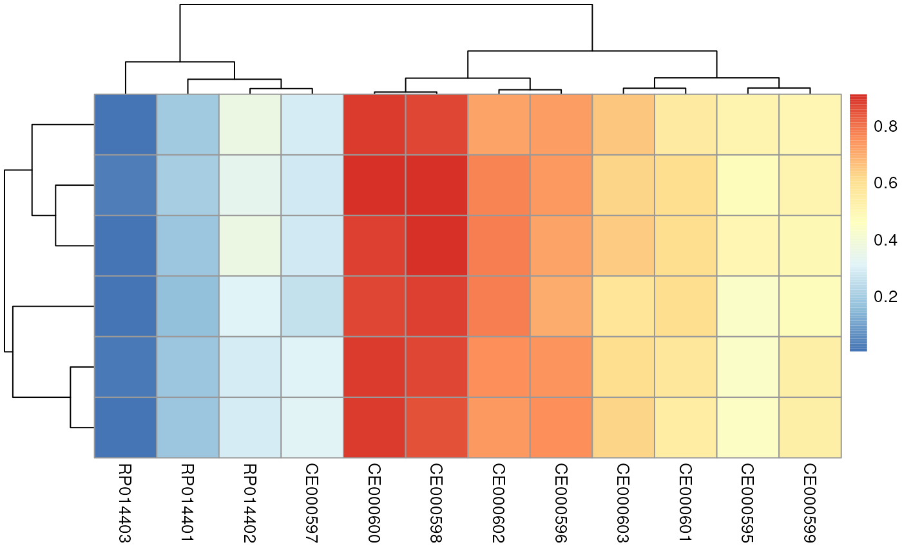
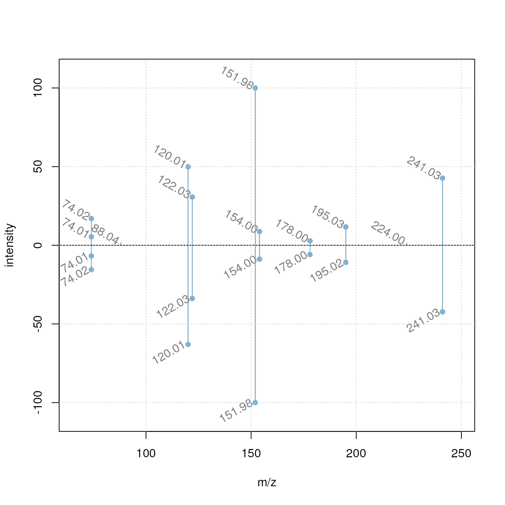

Seamless Integration of Mass Spectrometry Data from Different Sources with the `Spectra` Package
Johannes Rainer1, Michael Witting2, Sebastian Gibb3, Laurent Gatto4
Source:vignettes/analyzing-MS-data-from-different-sources-with-Spectra.Rmd
analyzing-MS-data-from-different-sources-with-Spectra.RmdLast modified: 2022-09-19 06:15:28
Compiled: Mon Sep 19 06:22:51 2022
Overview
Description
Mass spectrometry (MS) data is a key technology in modern proteomics and metabolomics experiments. Due to continuous improvements in MS instrumentation, the generated data can easily become very large. Also, additional resources of MS data exist, such as spectra libraries and databases, all with their own specific file formats and database systems that sometimes do not support manipulations of the original data.
Learning from experiences with the MSnbase
Bioconductor package, the Spectra
package was developed to provide an even more flexible and expandable
infrastructure for MS data in R. This package implements a clear
separation between the user interface and the code to provide, store and
import MS data. The latter is defined by the MsBackend
interface which allows implementation of data type, format or
storage-dependent backends. Backends can thus be implemented
for specific file types and data resources or different ways to
represent MS data (e.g. in memory or on-disk data
representations as described in (Gatto, Gibb, and
Rainer 2020)). They are also supposed to be interchangeable hence
allowing the user to switch backends without affecting the analysis. To
enable processing of also very large MS data sets, data manipulations
are by default not directly applied to the data but cached in a lazy
evaluation queue which allows analyses also of read-only
data representations.
This workshop shows the expandability of the new infrastructure to enable a seamless integration and analysis of MS data from a variety of input formats. This is illustrated by a simple comparison and matching of experimental MS2 spectra against public spectral databases and export of the data in a format commonly used for exchange of MS2 data.
Pre-requisites
- Basic familiarity with R and Bioconductor.
- Basic understanding of Mass Spectrometry (MS) data.
Installation and Participation
Get the docker image of this tutorial with
docker pull jorainer/spectra_tutorials:latest.-
Start docker using
docker run \ -e PASSWORD=bioc \ -p 8787:8787 \ jorainer/spectra_tutorials:latest Enter
http://localhost:8787in a web browser and log in with usernamerstudioand passwordbioc.Open this R-markdown file (vignettes/analyzing-MS-data-from-different-sources-with-Spectra.Rmd) in the RStudio server version in the web browser and evaluate the R code blocks.
To get the source code: clone this github repository, e.g. with
git clone https://github.com/jorainer/SpectraTutorials.
For an alternative way to install the packages and data for the workshop see the README file of the workshop’s github repository.
Time outline
Time outline
| Activity | Time |
|---|---|
Introduction (LC-MS/MS, Spectra package) |
10min |
| MS data import and handling | 5min |
| Data processing and manipulation | 5min |
| Spectrum data comparison | 5min |
| Comparing spectra against MassBank | 10min |
| Data export | 5min |
| (Comparing spectra against HMDB) | (5min) |
| (An alternative way to store MS data) | (5min) |
Workshop
LC-MS/MS in a nutshell
- Mass spectrometry (MS) instruments measure mass-to-charge ratios (m/z) and abundances of ions. The resulting m/z and intensity values are stored/represented as a spectrum.
- Most compounds are not charged, they need to be ionized first (with e.g. electro spray ionization (ESI)).
- MS is usually combined with another separation technique, such as liquid chromatography (LC). This adds another dimension to the data: retention time (rt). LC-MS data is represented by multiple spectra, each spectrum with its own retention time.

LC-MS setup
- With LC-MS we measure features characterized by m/z and retention time - we still don’t know what molecule was actually measured.
- Create in addition fragment (MS/MS) spectra from the ions to get some information about their structure.
CID-based fragmentation
- Commonly used method: collision induced dissociation (CID). In a collision chamber filled with e.g. N2, ions get fragmented and a spectrum of these fragments is recorded (Steckel and Schlosser 2019).
- Comparing and matching such fragment spectra against a reference helps identifying the compound.
The Spectra package
- Purpose: provide an expandable, well tested and user-friendly infrastructure for mass spectrometry (MS) data.
- Design: separation between user interface (functions) and code to provide, store and read MS data.
-
Advantage: support different ways to store and
handle the data without affecting the user functionality: all
functionality of a
Spectraobject is independent of where the data is, either in-memory, on-disk, locally or remote. -
Expandable: through implementation of additional
backend classes (extending the
MsBackendvirtual class) it is possible to add support for additional input file formats or data representations without needing to change theSpectrapackage or object.
Spectra: separation into user functionality and data representation
In this workshop we will:
- import MS data from mzML files,
- select MS2 spectra for a certain compound,
- compare and match the MS2 spectra against reference MS2 spectra from a public database,
- annotate the spectra and export them to a file in MGF format.
MS data import and handling
Below we import the MS data from the mzML files provided within this
package. These files contain MSn data of a mix of 8 standard compounds
(added either to water or a pool of human serum samples) measured with a
HILIC-based LC-MS/MS setup. MS2 data was generated by data dependent
acquisition using a collision energy of 20eV. For data import and
representation of these experimental data we use the
MsBackendMzR backend which supports import (and export) of
data from the most common raw mass spectrometry file formats
(i.e. mzML, mzXML and CDF).
library(Spectra)
#' Define the input files
fls <- dir(system.file("mzML", package = "SpectraTutorials"),
full.names = TRUE)
#' Import the data
sps_all <- Spectra(fls, source = MsBackendMzR())The MS data is now represented by a Spectra object,
which can be thought of as a data.frame with rows being the
individual spectra and columns the spectra variables (such as
"rtime", i.e. the retention time). The
spectraVariables function lists all available variables
within such a Spectra object.
#' List all available spectra variables (attributes)
spectraVariables(sps_all)## [1] "msLevel" "rtime"
## [3] "acquisitionNum" "scanIndex"
## [5] "dataStorage" "dataOrigin"
## [7] "centroided" "smoothed"
## [9] "polarity" "precScanNum"
## [11] "precursorMz" "precursorIntensity"
## [13] "precursorCharge" "collisionEnergy"
## [15] "isolationWindowLowerMz" "isolationWindowTargetMz"
## [17] "isolationWindowUpperMz" "peaksCount"
## [19] "totIonCurrent" "basePeakMZ"
## [21] "basePeakIntensity" "ionisationEnergy"
## [23] "lowMZ" "highMZ"
## [25] "mergedScan" "mergedResultScanNum"
## [27] "mergedResultStartScanNum" "mergedResultEndScanNum"
## [29] "injectionTime" "filterString"
## [31] "spectrumId" "ionMobilityDriftTime"
## [33] "scanWindowLowerLimit" "scanWindowUpperLimit"Each spectra variable can be accessed either via
$ and its name or by using its dedicated access function
(which is the preferred way). Below we extract the retention times of
the first spectra using either $rtime or the function
rtime.
#' Access the spectras' retention time
sps_all$rtime |> head()## [1] 0.273 0.570 0.873 1.183 1.491 1.798## [1] 0.273 0.570 0.873 1.183 1.491 1.798Our Spectra object contains information from in total
1578 spectra from length(unique(dataOrigin(sps_all))) mzML
files. By using the MsBackendMzR backend, only general
information about each spectrum is kept in memory resulting in a low
memory footprint.
print(object.size(sps_all), units = "MB")## 0.4 MbThe spectra’s m/z and intensity values can be accessed with the
mz or intensity functions or also with the
peaksData function that returns a list of numeric matrices
with the m/z and intensity values. By using an MsBackendMzR
backend, these are retrieved on demand from the original data files each
time the functions are called.
## mz intensity
## [1,] 50.22647 383.7802
## [2,] 52.97586 377.5944
## [3,] 59.97846 518.6014
## [4,] 60.04677 4716.1259
## [5,] 60.06897 181.5105
## [6,] 61.02565 250.6573We can also load the full data into memory by changing the backend
from MsBackendMzR to MsBackendDataFrame. This
does not affect the way we use the Spectra object itself:
the same operations and functions are available, independently of the
way the data is stored (i.e. which backend is used).
#' Change backend to a MsBackendDataFrame: load data into memory
sps_all <- setBackend(sps_all, MsBackendDataFrame())The size of our Spectra object is now larger, since the
full data has been loaded into memory.
print(object.size(sps_all), units = "MB")## 16.5 MbTo subset Spectra objects, we can use either
[ or one of the many available filter*
functions (that are usually more efficient than [). We
could this subset the sps_all to some arbitrary spectra
simply using:
sps_all[c(4, 2, 5)]## MSn data (Spectra) with 3 spectra in a MsBackendDataFrame backend:
## msLevel rtime scanIndex
## <integer> <numeric> <integer>
## 1 1 1.183 4
## 2 1 0.570 2
## 3 1 1.491 5
## ... 33 more variables/columns.
## Processing:
## Switch backend from MsBackendMzR to MsBackendDataFrame [Mon Sep 19 06:22:56 2022]In our workshop, we next want to identify in our experimental data
MS2 spectra that were generated from an ion that matches the m/z of the
[M+H]+ ion of the metabolite cystine (one of the standards
added to the sample mix measured in the present experimental data). We
thus use below the filterPrecursorMzValues function to
subset the data to MS2 spectra matching that m/z (accepting a difference
in m/z of 10 parts-per-million (ppm)).
#' Define the m/z ratio for an ion of cystine
mz <- 241.0311
#' Subset the dataset to MS2 spectra matching the m/z
sps <- filterPrecursorMzValues(sps_all, mz = mz, ppm = 10)
sps## MSn data (Spectra) with 6 spectra in a MsBackendDataFrame backend:
## msLevel rtime scanIndex
## <integer> <numeric> <integer>
## 1 2 209.936 673
## 2 2 220.072 714
## 3 2 231.604 734
## 4 2 215.089 761
## 5 2 225.739 781
## 6 2 240.020 804
## ... 33 more variables/columns.
## Processing:
## Switch backend from MsBackendMzR to MsBackendDataFrame [Mon Sep 19 06:22:56 2022]
## Filter: select spectra with precursor m/z matching 241.0311 [Mon Sep 19 06:22:57 2022]In total 6 spectra matched our target precursor m/z.
Data processing and manipulation
The plotSpectra function can be used to visualize
spectra. Below we plot the first spectrum from our data subset.
#' Plot the first spectrum
plotSpectra(sps[1])This raw MS2 spectrum contains many very low intensity peaks, most
likely representing noise. Thus we next filter the spectra removing all
peaks with an intensity smaller than 5% of the maximum intensity of each
spectrum (i.e. the base peak intensity). To this end we define a
function that takes intensity values from each spectrum as input and
returns a logical value whether the peak should be retained
(TRUE) or not (FALSE). This function is then
passed to the filterIntensity function to perform the
actual filtering of the spectra.
#' Define a filtering function
low_int <- function(x, ...) {
x > max(x, na.rm = TRUE) * 0.05
}
#' Apply the function to filter the spectra
sps <- filterIntensity(sps, intensity = low_int)After filtering, the spectra are cleaner:
#' Plot the first spectrum after filtering
plotSpectra(sps[1])
In addition we want to replace the absolute peak intensities with
values that are relative to each spectrum’s highest peak intensity. To
this end we define a function that takes a peak matrix as input
(i.e. a numeric matrix with columns containing the m/z and
intensity values) and returns a two-column numeric matrix.
This function is then passed with parameter FUN to the
addProcessing function to perform the desired data
processing.
#' Define a function to scale the intensities. `x` is expected to be a
#' *peak matrix*, i.e. numeric matrix with columns m/z and intensity
scale_int <- function(x, ...) {
maxint <- max(x[, "intensity"], na.rm = TRUE)
x[, "intensity"] <- 100 * x[, "intensity"] / maxint
x
}
#' *Apply* the function to the data
sps <- addProcessing(sps, scale_int)The addProcessing function allows to add
any user-defined data manipulation operation on MS data
(i.e. the peaks matrices) in a Spectra object.
To show the effect of the data processing we extract the intensities of the first spectrum:
#' Get the intensities after scaling
peaksData(sps)[[1L]]## mz intensity
## [1,] 74.02289 13.439402
## [2,] 120.01111 93.631648
## [3,] 122.02667 49.287979
## [4,] 151.98277 100.000000
## [5,] 153.99924 9.422415
## [6,] 177.99880 6.581111
## [7,] 195.02556 12.969807
## [8,] 241.03074 54.633224The intensity values are now all between 0 and 100.
Spectrum data comparison
We next perform a pairwise comparison of the subsetted spectra using
the dot product as similarity measure. Prior to the actual similarity
calculation, the peaks of the individual spectra have to be matched
against each other (i.e. it has to be determined which peak from one
spectrum correspond to which from the other spectrum based on their
mass-to-charge ratios). We specify ppm = 20 so that peaks
with a difference in m/z smaller than 20ppm will be considered
matching.
#' Pairwise comparison of all spectra
sim_mat <- compareSpectra(sps, ppm = 20)
sim_mat## [,1] [,2] [,3] [,4] [,5] [,6]
## [1,] 1.0000000 0.9717669 0.8907129 0.9721095 0.8795912 0.8818719
## [2,] 0.9717669 1.0000000 0.9992127 0.9964783 0.9525726 0.9486682
## [3,] 0.8907129 0.9992127 1.0000000 0.9947650 0.9518138 0.9478201
## [4,] 0.9721095 0.9964783 0.9947650 1.0000000 0.9543584 0.9494561
## [5,] 0.8795912 0.9525726 0.9518138 0.9543584 1.0000000 0.9994800
## [6,] 0.8818719 0.9486682 0.9478201 0.9494561 0.9994800 1.0000000The pairwise spectra similarities are represented with the heatmap
below (note that RStudio in the docker might crash by the
pheatmap call - to avoid this add
filename = "hm.pdf" to the heatmap call).

The similarity between all the selected experimental MS2 spectra is very high (in fact above 0.88) suggesting that all of them are fragment spectra from the same original compound.
Comparing spectra against MassBank
Although the precursor m/z of our spectra matches the m/z of cystine, we can still not exclude that they represent fragments of ions from different compounds (with the same m/z than cystine).
Matching experimental spectra against a public spectral library can be used as a first step in the identification process of untargeted metabolomics data. Several (public) spectral libraries for small molecules are available, such as:
For some of these databases MsBackend interfaces are
already implemented allowing inclusion of their data directly into
R-based analysis workflows. Access to MassBank data is for example
possible with the MsBackendMassbank
package. This package provides the MsBackendMassbank for
import/export of MassBank files as
well as the MsBackendMassbankSql backend that directly
interfaces the MassBank MySQL database.
Below we connect to a local installation of the MassBank MySQL database (release 2021.03 which is provided within the docker image of this tutorial).
library(RMariaDB)
#' Connect to the MassBank MySQL database
con <- dbConnect(MariaDB(), user = "massbank", dbname = "MassBank",
host = "localhost", pass = "massbank")Alternatively, if no MySQL database system is available or if this
tutorial can not be run within docker, an SQLite database
version of the MassBank data (in the format required for
MsBackendMassbankSql is available here.
After downloading the database MassbankSql-2021-03.db to the
current R workspace, the resource can be loaded with the code below.
## Alternative to the MySQL server - assuming the SQLite database was
## stored to the R working directory.
library(RSQLite)
con <- dbConnect(SQLite(), "MassbankSql-2021-03.db")We next load the MsBackendMassbank package and
initialize a Spectra object with a
MsBackendMassbankSql backend providing it with the database
connection (either the MySQL or the SQLite connection generated
above).
library(MsBackendMassbank)
#' Access the spectra data in MassBank
mbank <- Spectra(con, source = MsBackendMassbankSql())
mbank## MSn data (Spectra) with 86576 spectra in a MsBackendMassbankSql backend:
## msLevel precursorMz polarity
## <integer> <numeric> <integer>
## 1 2 506 0
## 2 NA NA 1
## 3 NA NA 0
## 4 NA NA 1
## 5 NA NA 0
## ... ... ... ...
## 86572 2 449.380 1
## 86573 2 426.022 0
## 86574 2 131.060 0
## 86575 2 183.170 1
## 86576 2 358.270 0
## ... 42 more variables/columns.
## Use 'spectraVariables' to list all of them.The Spectra object mbank
represents now the MS data from the MassBank database with in
total length(mbank) spectra. In fact, the
mbank object itself does not contain any MS data, but only
the primary keys of the spectra in the MassBank database. Hence, it has
also a relatively low memory footprint.
print(object.size(mbank), units = "MB")## 6.6 MbAny operation on a Spectra object with this backend will
load the requested data from the database on demand. Calling
intensity on such a Spectra object would for
example retrieve the intensity values for all spectra from the database.
Below we extract the peaks matrix for the first spectrum.
#' Get peaks matrix for the first spectrum
peaksData(mbank[1])[[1L]]## mz intensity
## [1,] 146.7608 0.980184
## [2,] 158.8635 938.145447
## [3,] 174.9888 56.718353
## [4,] 176.8688 847.169678
## [5,] 213.9867 133.479233
## [6,] 221.0402 3.189743
## [7,] 238.9681 76.114944
## [8,] 246.3159 2.592528
## [9,] 255.0206 2.059480
## [10,] 256.8184 1.597428
## [11,] 272.9973 801.059082
## [12,] 290.9484 4.848598
## [13,] 293.9753 1.233919
## [14,] 310.1210 33.710808
## [15,] 352.9528 49.103123
## [16,] 370.9348 461.860779
## [17,] 390.0576 4.611422
## [18,] 408.0003 23963.912109
## [19,] 409.0284 0.884388
## [20,] 426.1263 69.098648
## [21,] 470.0574 2.051622
## [22,] 487.9893 812.386597
## [23,] 585.8845 1.093564As we can see, also MassBank provides absolute intensities for each
spectrum. To have all the data on the same scale, we would however like
to scale them to values between 0 and 100, just like we did for our
experimental data. Below we thus apply the same data processing
operation also to the MassBank Spectra object.
#' Scale intensities for all MassBank spectra
mbank <- addProcessing(mbank, scale_int)
peaksData(mbank[1])[[1L]]## mz intensity
## [1,] 146.7608 4.090250e-03
## [2,] 158.8635 3.914826e+00
## [3,] 174.9888 2.366824e-01
## [4,] 176.8688 3.535189e+00
## [5,] 213.9867 5.570010e-01
## [6,] 221.0402 1.331061e-02
## [7,] 238.9681 3.176232e-01
## [8,] 246.3159 1.081847e-02
## [9,] 255.0206 8.594089e-03
## [10,] 256.8184 6.665973e-03
## [11,] 272.9973 3.342773e+00
## [12,] 290.9484 2.023292e-02
## [13,] 293.9753 5.149072e-03
## [14,] 310.1210 1.406732e-01
## [15,] 352.9528 2.049045e-01
## [16,] 370.9348 1.927318e+00
## [17,] 390.0576 1.924319e-02
## [18,] 408.0003 1.000000e+02
## [19,] 409.0284 3.690499e-03
## [20,] 426.1263 2.883446e-01
## [21,] 470.0574 8.561298e-03
## [22,] 487.9893 3.390042e+00
## [23,] 585.8845 4.563378e-03This worked, although we are (for obvious reasons)
not allowed to change the m/z and intensity values
within the MassBank database. How is this then possible? It works,
because any data manipulation operation on a Spectra object
is cached within the object’s lazy evaluation queue and any
such operation is applied to the m/z and intensity values
on-the-fly whenever the data is requested (i.e. whenever
mz or intensity is called on it). As a side
effect, this also allows to undo certain data operations by
simply calling reset on the Spectra
object.
We next want to compare our experimental spectra against the spectra
from MassBank. Instead of comparing against all 86576 available spectra,
we first filter the MassBank database to spectra with a precursor m/z
matching the one of the [M+H]+ ion of cystine. Note that, as an
alternative to the filterPrecursorMzValues used below, we
could also use the containsMz function to screen for
spectra containing an actual peak matching the precursor m/z.
#' Filter MassBank for spectra of precursor ion
mbank_sub <- filterPrecursorMzValues(mbank, mz = mz, ppm = 10)
mbank_sub## MSn data (Spectra) with 12 spectra in a MsBackendMassbankSql backend:
## msLevel precursorMz polarity
## <integer> <numeric> <integer>
## 1 2 241.031 1
## 2 2 241.031 1
## 3 2 241.031 1
## 4 2 241.031 1
## 5 2 241.031 1
## ... ... ... ...
## 8 2 241.031 1
## 9 2 241.031 1
## 10 2 241.031 1
## 11 2 241.031 1
## 12 2 241.031 1
## ... 42 more variables/columns.
## Use 'spectraVariables' to list all of them.
## Lazy evaluation queue: 1 processing step(s)
## Processing:
## Filter: select spectra with precursor m/z matching 241.0311 [Mon Sep 19 06:23:01 2022]This left us with 12 spectra for which we calculate the similarity
against each of our experimental spectra using the
compareSpectra function.
#' Compare MassBank subset to experimental spectra
res <- compareSpectra(sps, mbank_sub, ppm = 20)
res## RP014401 RP014402 RP014403 CE000600 CE000598 CE000602 CE000595
## [1,] 0.2026317 0.3343503 0.024658599 0.9021127 0.9069832 0.7714246 0.4711052
## [2,] 0.1807144 0.2933160 0.021440961 0.8863867 0.8655798 0.7507946 0.4307388
## [3,] 0.1801990 0.2892779 0.005165072 0.8862688 0.8541779 0.7335706 0.4406949
## [4,] 0.1596113 0.3067826 0.005668103 0.8666230 0.8760503 0.7770975 0.4382448
## [5,] 0.1784321 0.3608116 0.005392068 0.8792278 0.9101864 0.7761744 0.5016645
## [6,] 0.1871595 0.3629835 0.005564441 0.8849054 0.8705634 0.7200598 0.5052482
## CE000599 CE000596 CE000597 CE000603 CE000601
## [1,] 0.5101048 0.7358534 0.2843629 0.6267950 0.6085564
## [2,] 0.5304578 0.7415840 0.3069911 0.6079285 0.5669921
## [3,] 0.5379880 0.7480320 0.3157130 0.6220260 0.5458613
## [4,] 0.4738241 0.6957804 0.2580864 0.5819616 0.6049588
## [5,] 0.4913249 0.7185230 0.2783447 0.6469762 0.6055037
## [6,] 0.5013606 0.7278495 0.2864854 0.6554185 0.5523657As a result we got the (normalized dot product) similarity score between each tested MassBank spectrum (rows) against each experimental spectrum (columns).
pheatmap(res)
We get some very high similarity scores, but also some lower ones. We next determine the best matching pair from all the comparisons.
## row col
## [1,] 5 5The best_match variable contains now the index of the
best matching MassBank and experimental spectrum. Below we visualize
these two using a mirror plot showing in the upper panel the
MS2 spectrum from MassBank and in the lower panel the best matching
experimental spectrum. Matching peaks are highlighted with a blue color.
Plotting functions in Spectra are highly customizable and
in the example below we add the m/z for each individual peak as an
annotation to it but only if the intensity of the peak is
higher than 5.
#' Specifying a function to draw peak labels
label_fun <- function(x) {
ints <- unlist(intensity(x))
mzs <- format(unlist(mz(x)), digits = 4)
mzs[ints < 5] <- ""
mzs
}
plotSpectraMirror(mbank_sub[best_match[1]], sps[best_match[2]],
ppm = 20, labels = label_fun, labelPos = 2,
labelOffset = 0.2, labelSrt = -30)
grid()
As a comparison we plot also two spectra with a low similarity score.
plotSpectraMirror(mbank_sub[1], sps[3],
ppm = 20, labels = label_fun, labelPos = 2,
labelOffset = 0.2, labelSrt = -30)
grid()
Since we could identify a MassBank spectrum with a high similarity to
our experimental spectra we would also like to know which compound this
spectrum actually represents. Spectra objects are generally
very flexible and can have arbitrarily many additional annotation fields
(i.e. spectra variables) for each spectrum. Thus, we below use
the spectraVariables function to list all of the variables
that are available in our MassBank Spectra object.
#' What variables are available in MassBank
spectraVariables(mbank_sub)## [1] "msLevel" "rtime"
## [3] "acquisitionNum" "scanIndex"
## [5] "dataStorage" "dataOrigin"
## [7] "centroided" "smoothed"
## [9] "polarity" "precScanNum"
## [11] "precursorMz" "precursorIntensity"
## [13] "precursorCharge" "collisionEnergy"
## [15] "isolationWindowLowerMz" "isolationWindowTargetMz"
## [17] "isolationWindowUpperMz" "spectrum_id"
## [19] "spectrum_name" "date"
## [21] "authors" "license"
## [23] "copyright" "publication"
## [25] "splash" "compound_id"
## [27] "adduct" "ionization"
## [29] "ionization_voltage" "fragmentation_mode"
## [31] "collision_energy_text" "instrument"
## [33] "instrument_type" "formula"
## [35] "exactmass" "smiles"
## [37] "inchi" "inchikey"
## [39] "cas" "pubchem"
## [41] "synonym" "precursor_mz_text"
## [43] "compound_name"In fact, in addition to spectra specific information like the
instrument on which it was measured or the ionization voltage used, we
get also information on the originating compound such as its name
("compound_name"), its chemical formula
("formula") or its INChI key ("inchikey"). We
thus next subset mbank_sub to the best matching spectrum
and display its associated compound name.
mbank_best_match <- mbank_sub[best_match[1]]
mbank_best_match$compound_name## [1] "Cystine"Indeed, our experimental cystine spectrum matches (one) cystine
spectrum in MassBank. Below we next add the name and the chemical
formula of this spectrum to our experimental spectra. We also set the
collision energy for to 20eV and assign the ion/adduct of cystine from
which the reference spectrum was created. Spectra allows
adding new (or replacing existing) spectra variables using
$<-.
#' Add annotations to the experimental spectra
sps$name <- mbank_best_match$compound_name
sps$formula <- mbank_best_match$formula
sps$adduct <- mbank_best_match$adduct
sps$collisionEnergy <- 20Note: a more convenient spectra matching functionality designed for
less experienced R users is available in the MetaboAnnotation
package. A second tutorial is available within this github repository/R
package and additional tutorials can be found in the MetaboAnnotationTutorials
repository/R package.
Data export
At last we want to export our spectra to a file in MGF format. For
this we use the MsBackendMgf
package which provides the MsBackendMgf backend that adds
support for MGF file import/export to Spectra objects.
Data from Spectra objects can generally be exported with
the export function. The format in which the data is
exported depends on the specified MsBackend class. By using
an instance of MsBackendMgf we define to export the data to
a file in MGF format.
library(MsBackendMgf)
#' Export the spectra to a MGF file
export(sps, backend = MsBackendMgf(), file = "Cystine_ce20.mgf")Below we read the first 6 lines from the resulting file.
readLines("Cystine_ce20.mgf", n = 6)## [1] "BEGIN IONS"
## [2] "TITLE=msLevel 2; retentionTime ; scanNum "
## [3] "msLevel=2"
## [4] "RTINSECONDS=209.93599999998"
## [5] "SCANS=673"
## [6] "scanIndex=673"Comparing spectra against HMDB
In addition to the MsBackendMassbank, which provides
access to MassBank data, there is also the MsBackendHmdb
package supporting spectral data from the public Human Metabolome
Database (HMDB). This package does however not yet provide direct access
to the HMDB database but, through the MsBackendHmdbXml
backend, allows to import MS2 spectra files in HMDB format. These are
provided by HMDB as individual xml files in a custom file format which
are bundled (and can hence be downloaded) in a single archive.
As an alternative, it is also possible to create portable annotation
resources using the CompoundDb
package. This packages allows for example to create annotation databases
for MoNA, MassBank or HMDB. CompDb with annotations for
small compounds from different resources will become available also on
Bioconductors AnnotationHub.
A CompDb database containing all compound annotations
along with all (experimental) MS2 spectra is provided as a data release
in the MetaboAnnotationTutorials
repository. Below we download this SQLite database to a temporary
file.
#' Download the CompDb database using curl
library(curl)
dbname <- "CompDb.Hsapiens.HMDB.5.0.sqlite"
db_file <- file.path(tempdir(), dbname)
curl_download(
paste0("https://github.com/jorainer/MetaboAnnotationTutorials/",
"releases/download/2021-11-02/", dbname),
destfile = db_file)We can now load this annotation resource using the
CompDb function from the CompoundDb
package:
library(CompoundDb)
#' Load a CompDb database with compound annotation from HMDB
cdb <- CompDb(db_file)
cdb## class: CompDb
## data source: HMDB
## version: 5.0
## organism: Hsapiens
## compound count: 217776
## MS/MS spectra count: 64920We can now again create a Spectra object to get access
to the MS2 spectra within this package:
hmdb <- Spectra(cdb)With this we have now a Spectra object containing all
MS2 spectra from HMDB along with compound annotations.
hmdb## MSn data (Spectra) with 64920 spectra in a MsBackendCompDb backend:
## msLevel precursorMz polarity
## <integer> <numeric> <integer>
## 1 NA NA 1
## 2 NA NA 1
## 3 NA NA 1
## 4 NA NA 1
## 5 NA NA 1
## ... ... ... ...
## 64916 NA NA 0
## 64917 NA NA 0
## 64918 NA NA 0
## 64919 NA NA 0
## 64920 NA NA 1
## ... 32 more variables/columns.
## Use 'spectraVariables' to list all of them.
## data source: HMDB
## version: 5.0
## organism: HsapiensThe spectra variables (including compound annotations) available for each spectrum are:
spectraVariables(hmdb)## [1] "msLevel" "rtime"
## [3] "acquisitionNum" "scanIndex"
## [5] "dataStorage" "dataOrigin"
## [7] "centroided" "smoothed"
## [9] "polarity" "precScanNum"
## [11] "precursorMz" "precursorIntensity"
## [13] "precursorCharge" "collisionEnergy"
## [15] "isolationWindowLowerMz" "isolationWindowTargetMz"
## [17] "isolationWindowUpperMz" "compound_id"
## [19] "name" "inchi"
## [21] "inchikey" "formula"
## [23] "exactmass" "smiles"
## [25] "original_spectrum_id" "predicted"
## [27] "splash" "instrument_type"
## [29] "instrument" "spectrum_id"
## [31] "msms_mz_range_min" "msms_mz_range_max"
## [33] "synonym"Also here, we want to filter the data resource first for spectra with
a matching precursor m/z. Unfortunately, HMDB does not provided the
spectra’s precursor m/z and we hence need to used the
containsMz function to find spectra containing a peak with
an m/z matching the m/z of our ion of interest. In addition, We need to
use a rather large tolerance value (which defines the
maximal acceptable absolute difference in m/z values) since some of the
experimental spectra in HMDB seem to be recorded by not well calibrated
instrument.
#' Identify spectra containing a peak matching cystine m/z
has_mz <- containsMz(hmdb, mz = mz, tolerance = 0.2)In total 3904 spectra contain a peak with the required m/z (+/- 0.2 Dalton) and we can proceed to calculate spectral similarities between these and our experimental spectra.
#' Subset HMDB
hmdb_sub <- hmdb[has_mz]
#' Compare HMDB against experimental spectra
res <- compareSpectra(hmdb_sub, sps, tolerance = 0.2)The highest similarity between our spectra and the spectra from HMDB
is r max(res). Below we compare the two best matching
spectra with a mirror plot, in the upper panel showing our
experimental spectrum and in the lower panel the best matching MS2
spectrum from HMDB.
best_match <- which(res == max(res), arr.ind = TRUE)
## Specifying a function to draw peak labels
label_fun <- function(x) {
format(unlist(mz(x)), digits = 4)
}
plotSpectraMirror(hmdb_sub[best_match[1]], sps[best_match[2]], tolerance = 0.2,
labels = label_fun, labelPos = 2, labelOffset = 0.2,
labelSrt = -30)
grid()
Our experimental spectrum seems to nicely match the
reference MS2 in HMDB. Below we extract the compound identifier
from the best matching HMDB spectrum (stored in a spectra variable
called "compound_id")
hmdb_sub[best_match[1]]$compound_id## [1] "HMDB0000192"And the name of this compound
hmdb_sub[best_match[1]]$name## [1] "L-Cystine"In fact, the matching spectrum from HMDB is an experimental spectrum for L-Cystine.
An alternative way to store MS data
For some use cases it might be useful to store the data from whole MS
experiments in a central place. The MsqlBackend backend
allows for example to store such data into a relational database, such
as simple SQLite files or MySQL/MariaDB
database systems. The latter case would allow also remote access to a
centrally stored data set. Also, performance, especially for large
datasets would be much better with a MySQL database compared to a SQLite
database as used here. In this section we show how data from an MS
experiment can be inserted into such a database and how it can be again
retrieved.
Below we create an empty SQLite database (in a temporary file). As detailed above, any SQL database system could be used instead (resulting eventually in even better performance).
We can next import the data from our example experiment into the selected database.
library(MsqlBackend)
## Create a database containing the full raw data
createMsqlBackendDatabase(scon, fls)## [1] TRUEThe MsqlBackend allows now to access and use the MS data
stored in such a database. We simply provide the connection to the
database as a parameter to the Spectra function and use the
MsqlBackend as backend.
sps_db <- Spectra(scon, source = MsqlBackend())
sps_db## MSn data (Spectra) with 1578 spectra in a MsqlBackend backend:
## msLevel precursorMz polarity
## <integer> <numeric> <integer>
## 1 1 NA 1
## 2 1 NA 1
## 3 1 NA 1
## 4 1 NA 1
## 5 1 NA 1
## ... ... ... ...
## 1574 2 130.9659 1
## 1575 2 175.1178 1
## 1576 2 193.9281 1
## 1577 2 107.9501 1
## 1578 2 95.0608 1
## ... 34 more variables/columns.
## Use 'spectraVariables' to list all of them.
## Database: /tmp/Rtmpd0oLdw/file60218bd9c23The memory footprint of this Spectra object is only very
small as all the data is retrieved from the database
on-the-fly.
print(object.size(sps_db), units = "MB")## 0.1 MbThe performance of this backend is also higher than for example of a
MsBackendMzR. Below we compare the performance of the
MsqlBackend on the present small data set to a
MsBackendDataFrame (data in-memory) and a
MsBackendMzR (data retrieved from original file).
## Load the data to different backends
sps_mzr <- Spectra(fls, source = MsBackendMzR())
sps_df <- setBackend(sps_mzr, MsBackendDataFrame())
library(microbenchmark)
microbenchmark(peaksData(sps_mzr),
peaksData(sps_df),
peaksData(sps_db),
times = 10)## Unit: milliseconds
## expr min lq mean median uq max
## peaksData(sps_mzr) 446.1647 454.2958 466.48957 460.80715 488.7996 494.9686
## peaksData(sps_df) 138.5289 140.6505 150.90686 145.00480 159.4934 182.5854
## peaksData(sps_db) 88.0310 90.7271 95.82102 94.67725 97.8086 115.0974
## neval
## 10
## 10
## 10Thus, the MsqlBackend has similar performance than
having all the data in memory. The performance is even better if smaller
subsets of the data are loaded.
microbenchmark(peaksData(sps_mzr[1:10]),
peaksData(sps_df[1:10]),
peaksData(sps_db[1:10]),
times = 10)## Unit: milliseconds
## expr min lq mean median uq max
## peaksData(sps_mzr[1:10]) 16.5493 16.8125 17.06416 16.98370 17.1897 18.2603
## peaksData(sps_df[1:10]) 6.8988 7.1295 8.04241 7.30760 7.6314 12.6421
## peaksData(sps_db[1:10]) 2.8145 2.8960 3.00021 2.93295 3.0558 3.4799
## neval
## 10
## 10
## 10A real world use case for such a backend would be to store a large MS
experiment in a central place. Data analysts could connect to that
central database, explore and subset the data and ultimately either load
subsets of the data into the (local) memory by changing the backend of
the data subset to e.g. a MsBackendDataFrame or store the
data subset to local files e.g. in mzML format by using the
export method and the MsBackendMzR
backend.
Short summary
Spectraprovides a powerful infrastructure for MS data.Independence between data analysis and data storage functionality allows to easily add support for additional data types or data handling/storage modes.
Caching data operations and applying them on-the-fly allows data manipulations regardless of how and where data is stored.
Summary
With the simple use case of matching experimental MS2 spectra against
a public database we illustrated in this short tutorial the flexibility
and expandability of the Spectra package that enables the
seamless integration of mass spectrometry data from different sources.
This was only possible with a clear separation of the user functionality
(Spectra object) from the representation of the data
(MsBackend object). Backends such as the MsBackendMgf,
the MsBackendMassbank
or the MsBackendHmdbXml
provide support for additional data formats or data sources, while
others, due to their much lower memory footprint
(MsBackendMzR, MsBackendHdf5Peaks), enable the
analysis of also very large data sets. Most importantly however, these
backends are interchangeable and do not affect the way users can handle
and analyze MS data with the Spectra package. Also, by
caching data operations within the Spectra object and
applying them only upon data requests, the same data operations can be
applied to any data resource regardless of how and where the data is
stored, even if the data itself is read-only.
What else?
-
MetaboAnnotation(Andrea Vicini, Michael Witting) to provide simple functions for matching of spectra or m/z and retention time data (Rainer et al. 2022). -
MsExperimentto represent whole MS experiments (incl.Spectra, sample annotation, data quantitation, annotation files etc). -
msQC(Thomas Naake): QC measures for MS data. -
MsBackendMsp(Steffen Neumann): backend for files in MSP format. ...